Esőerdőkben fellelhető élővilág
Az alábbi állatok a Borneó Délkelet-Ázsiában található esőerdőből származnak, és a világ egyik leggazdagabb élővilágú szigete. Esőerdeiben rengeteg különleges állat és növény él.
Emlősök
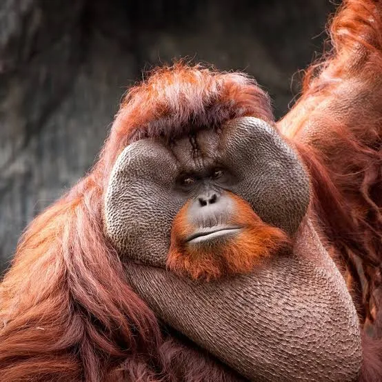
Borneói orangután
Pongo pygmaeus
- Ideje nagy részét a fákon tölti.
- Intelligens állat, képes eszközöket használni a táplálékszerzéshez.
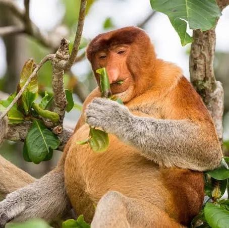
Nagyorrú majom
Nasalis larvatus
- A hímeknek feltűnően nagy orruk van.
- Kiváló úszók, gyakran folyók közelében élnek.
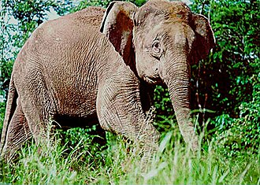
Borneói törpeelefánt
Elephas maximus borneensis
- Az ázsiai elefántok egyik legkisebb változata.
- Főként növényekkel, levelekkel és gyümölcsökkel táplálkozik.
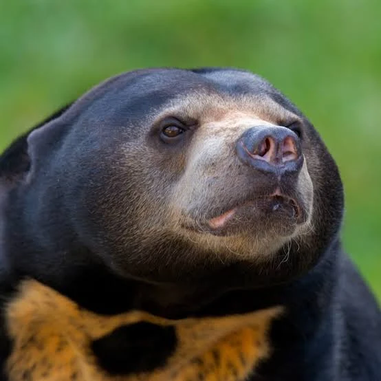
Maláj medve
Helarctos malayanus
- A világ legkisebb medvefaja.
- Hosszú nyelvével könnyen kiszedi a mézet és a rovarokat a fák üregeiből.
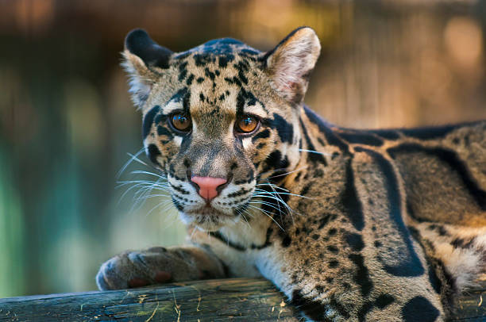
Szunda-felhős párduc
Neofelis diardi
- Bundáján felhőkre emlékeztető minták láthatók.
- Ügyesen mászik a fákon, hosszú farkával egyensúlyoz.
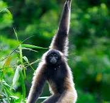
Borneói gibbon
Hylobates muelleri
- Hosszú karjaival gyorsan lendül egyik ágról a másikra.
- Hangos énekkel kommunikál társaival.
Madarak
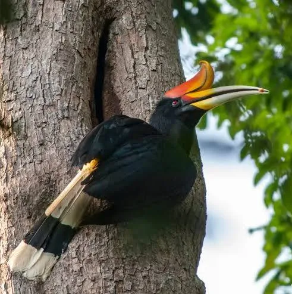
Orrszarvúmadár
- Hatalmas, színes csőre fölött szarvszerű képződmény található.
- A gyümölcsök magjainak szétszórásával segíti az erdő megújulását.
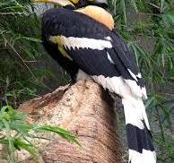
Fehérkoronás szarvascsőrűmadár
- Fehér tollkoronája különlegessé teszi.
- Gyümölcsökkel és kisebb állatokkal táplálkozik.
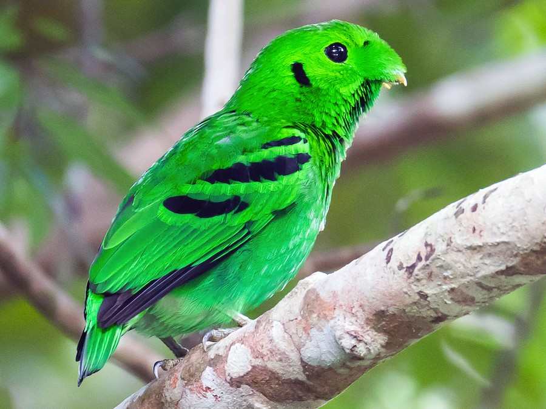
Zöld szélescsőrűmadár
- Élénkzöld tollazata segíti a lombok közötti rejtőzködésben.
- Gyümölcsökkel táplálkozik, és terjeszti a növények magjait.
Hüllők és kétéltűek
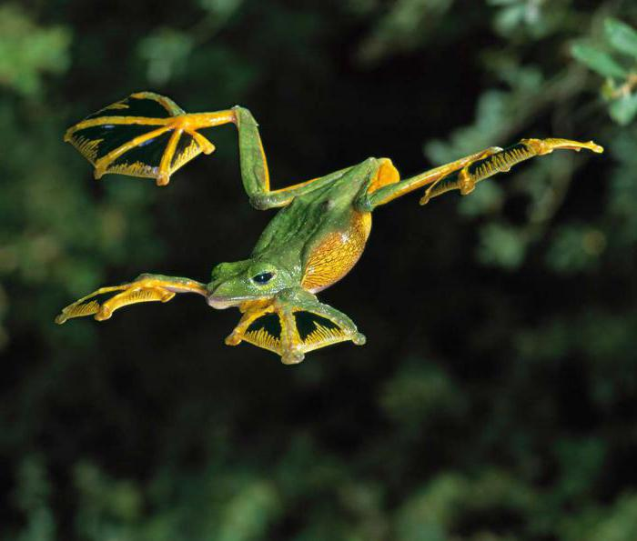
Wallace-repülőbéka
- Ujjai között nagy úszóhártya található.
- A fák között több tíz métert is képes siklani.
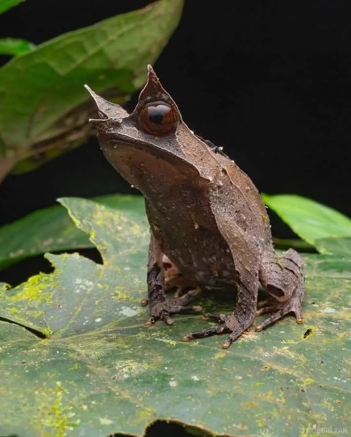
Borneói szarvasbéka
- Szeme fölötti kinövései levelekre hasonlítanak.
- Kiváló álcázása miatt nehéz észrevenni az avarban.
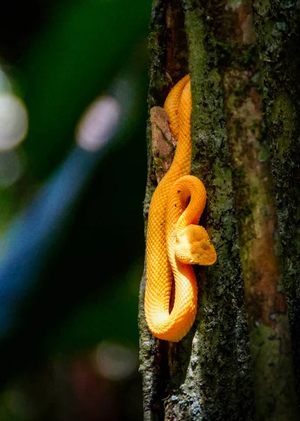
Paradicsomi repülőkígyó
- Testét ellapítva képes siklani a levegőben.
- Főként kisebb gyíkokra és békákra vadászik.
Rovarok és pókok
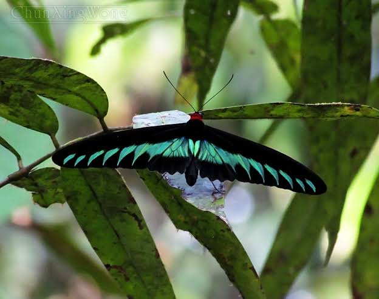
Rajah Brooke-pillangó
- Szárnyain élénkzöld és fekete mintázat látható.
- Borneó egyik legismertebb trópusi pillangója.
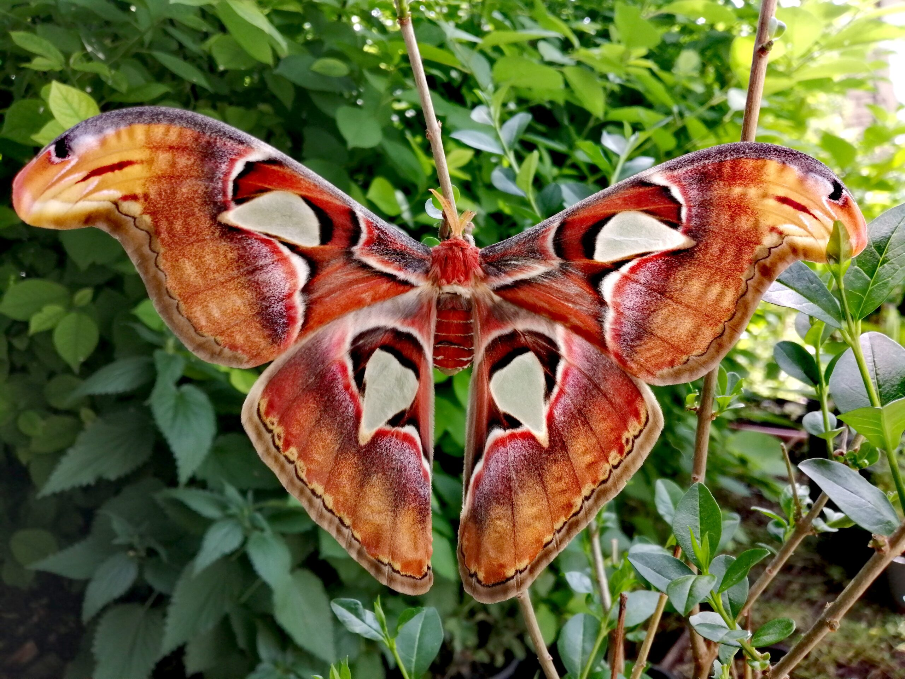
Atlaszlepke
- A világ egyik legnagyobb lepkéje.
- Szárnyfesztávolsága akár 25–30 cm is lehet.
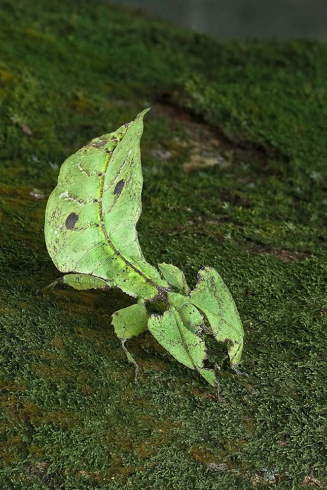
Levélutánzó rovar
- Teste és lábai egy valódi levélre hasonlítanak.
- Álcázásával elrejtőzik a ragadozók elől.
Különleges növények
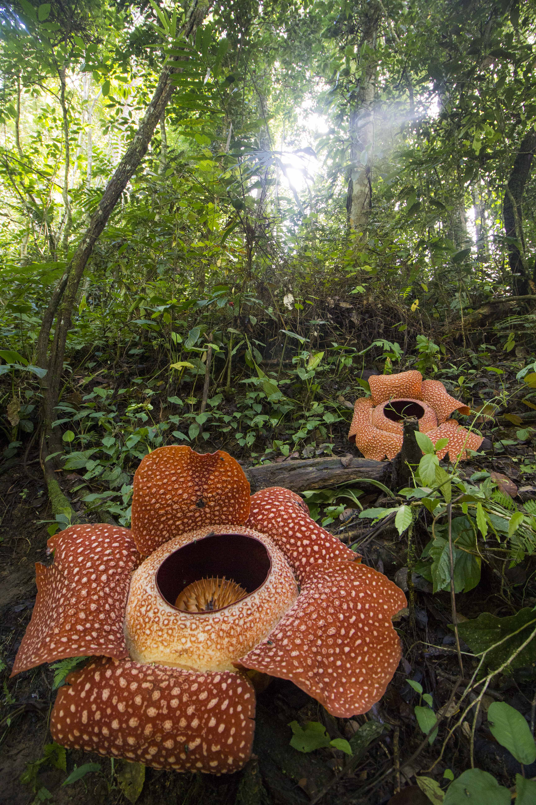
Rafflesia
- Virágának átmérője akár az 1 métert is elérheti.
- Húsrothadáshoz hasonló szagot áraszt.
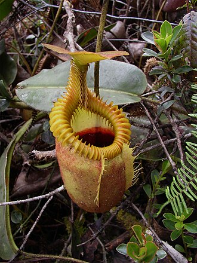
Kancsóka
- Levelei kancsó alakú csapdákká alakultak.
- Emésztőnedvével rovarokat bont le.
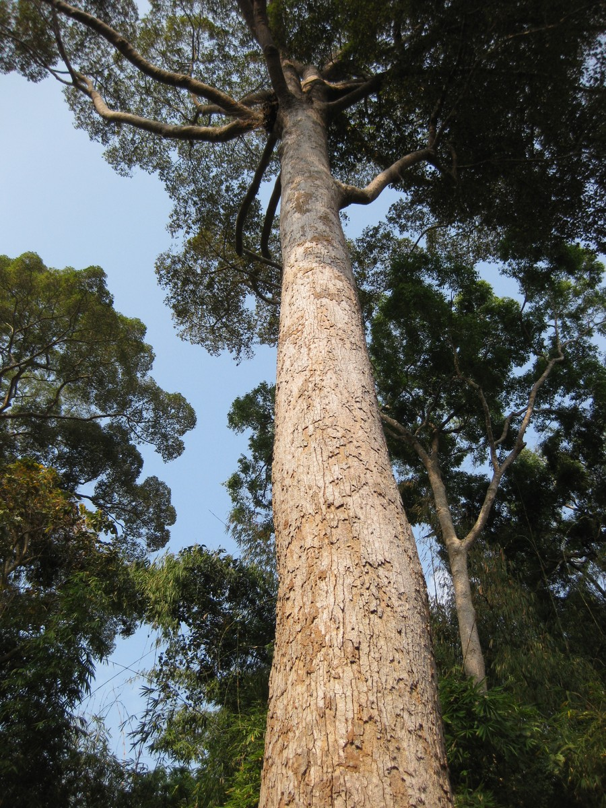
Dipterokarpuszfa
- Egyes példányai a 80 méteres magasságot is meghaladhatják.
- Szárnyas termése segíti a magok terjedését.